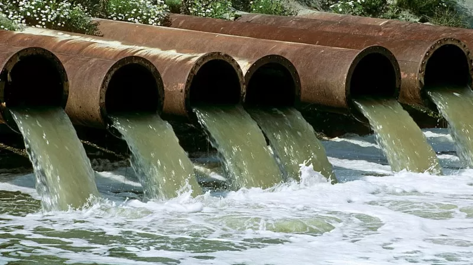
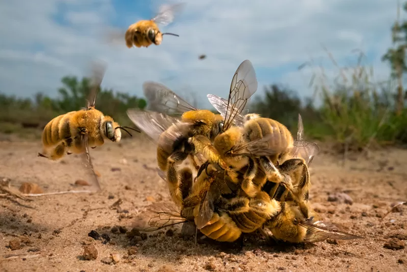
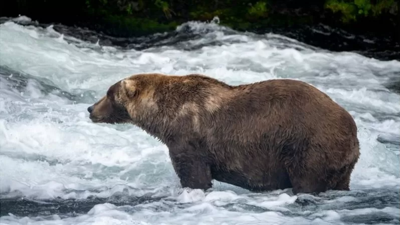
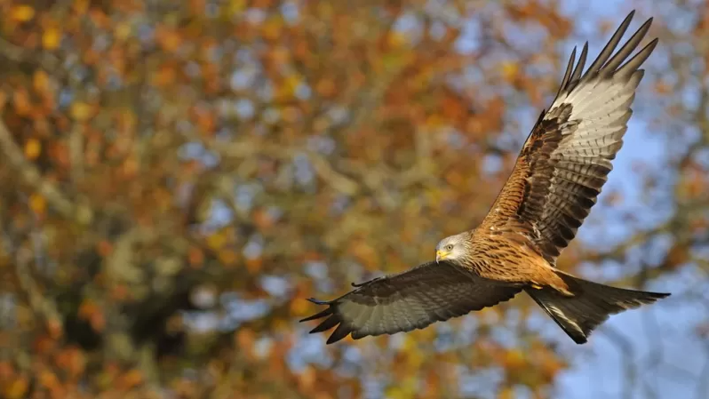
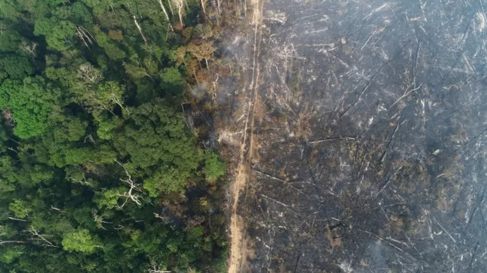

Как отходы канализации текут в реки и моря Британии и при чем тут брексит

На прошлой неделе сразу нескольким британским водоснабжающим компаниям были выписаны рекордные штрафы за загрязнение рек и морей неочищенными сточными водами. Давно существовавшая в Британии проблема, обусловленная старой канализацией, ростом населения и потеплением климата, усугубилась после брексита, когда из-за дефицита химикатов компаниям стало нечем очищать стоки, и отходы жизнедеятельности потекли из туалетов в водоемы почти в неизмененном виде.
Спаривающиеся пчелы, небесные фламинго и другие победители конкурса фотографий дикой природы

Самцы кактусовых пчел облепляют самку. Но кто из них окажется тем счастливчиком, который сможет с ней спариться? Этот замечательный снимок, сделанный Карин Айгнер, стал победителем конкурса Wildlife Photographer Of The Year в этом году.
Хорошего медведя должно быть много. Как конкурс на самого толстого косолапого Аляски покорил весь мири

Трудно сказать, как сами Отис и Холли отнеслись бы к тому, что их называют толстыми. Скорее всего, они бы не возражали, потому что для всех медведей, живущих в огромном Национальном парке и заповеднике Катмай на Аляске, масса тела - это очень важный показатель. А Отис и Холли не просто жирные, они - претенденты на звание победителя Недели толстого медведя 2022.
Красные коршуны в Испании вымирают. Британцы пытаются их спасти

Популяция хищных птиц в Испании стремительно сокращается из-за нехватки еды и травли. Поэтому британским экспертам разрешили отправить 30 птенцов красного коршуна в отдаленные горные районы на юго-западе Испании. Орнитологи надеются, что птицы приживутся и начнут там размножаться.
Леса Амазонки вырубают с рекордной скоростью. Защитники природы винят Болсонару

Количество деревьев, вырубленных в Бразилии на Амазонке в январе этого года, в 5 раз превысило показатели января прошлого года. Об этом свидетельствуют данные, полученные со спутников.